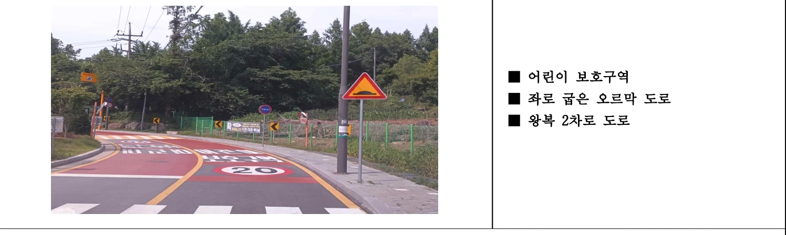

759. 다음과 같은 상황에서 가장 안전한 운전방법 2가지는?

- ①좌로 굽은 도로이므로 우측에 설치된 도로반사경을 이용해서 전방 상황을 확인하며 진행하는 것이 안전하다.
- ②오르막 도로이므로 최고 제한속도를 조금 넘더라도 속도를 올려 진행하는 것이 좋다.
- ③우측 길가장자리에 황색실선이 표시되어 있으므로 주차는 불가하나 정차는 가능하다.
- ④신호기가 없는 횡단보도에서는 보행자가 없더라도 횡단보도 앞에서 반드시 일시정지 후 진행한다.
- ⑤좌로 굽은 도로에서는 중앙선을 넘더라도 좌측으로 붙어 진행하는 것이 안전하다.
정답 보기
정답
① 좌로 굽은 도로이므로 우측에 설치된 도로반사경을 이용해서 전방 상황을 확인하며 진행하는 것이 안전하다.
④ 신호기가 없는 횡단보도에서는 보행자가 없더라도 횡단보도 앞에서 반드시 일시정지 후 진행한다.
근거·해설
어린이 보호구역은 30km/h 이내로 속도를 규정할 수 있고, 어린이 보호구역 내의 신호기가 없는 횡단보도에서는 보행자 보호를 위해 보행자 유무와 관계없이 반드시 일시정지 후 진행하여야 한다. 좌로 굽은 도로에서는 도로 좌측으로 진행할 우려가 있어 차로를 준수하여 운행하며, 황색실선 구간에서는 주정차 모두 금지된다.